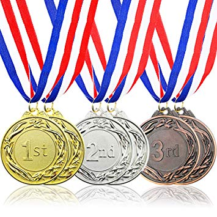

External Skills
Dance Classes
I have been in dance class since I was 5, I mainly practiced hip-hop and I stopped in 6th grade. I wanted to be on a more competitive team but I wasn't able to because of finances.
Excel Certified

When I was a freshmen in highschool, I was given the opportunity to take the Excel Certification test, we had been working with Excel for a majority of the year so I was able to pass, being 1/3 students in my class of 30 that recieved this.
HTML

I started coding in HTML in my first year of highschool, making many simplistic websites with better content opposed to format and style. In my second year of highschool, I continued by taking a Coding class which consisted of HTML and some small Javascript concepts. Now in my junior year, I'm in a Coding program and have learned more elaborate HTML, now I'm making websites that could potentially be published.
Art

I have always been in love with art and took art classes from 1st grade till my freshmen year of highschool. I favor painting the most because there are so many things you can do with just paint. I also enjoy drawing because of all the dimensions that the pictures can bring you into. I plan on taking professional art classes in college to better my art skills.